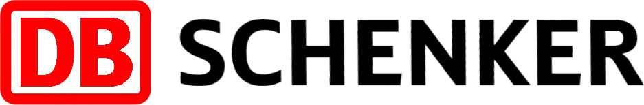
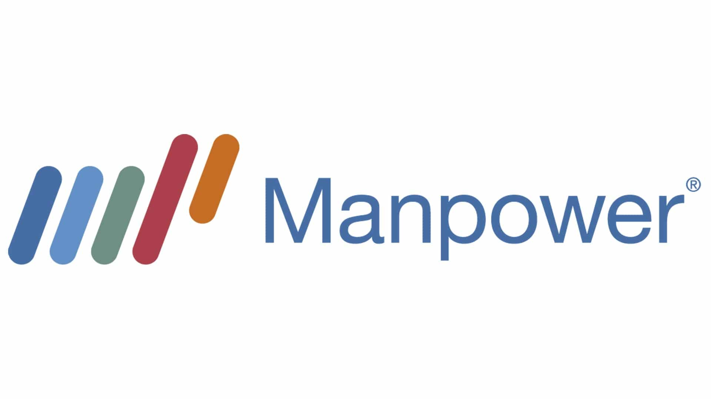

Mon Parcours Professionnel
Cliquez sur les expériences pour découvrir mon histoire
Restaurateur Polyvalent - Europavox (Juin 2025)
Lieu : Clermont-Ferrand (63100)
Durant l'édition de juin 2025 du festival Europavox à Clermont-Ferrand, j'ai exercé en tant que restaurateur polyvalent. Travailler au festival a été très intense. J'ai dû servir beaucoup de clients rapidement sans faire d'erreurs. Même avec la foule et le bruit, je suis resté calme et professionnel pour offrir un bon service.
Au-delà du simple service, ce poste m'a permis de développer ma communication et de renforcer la cohésion d'équipe. Pour assurer la fluidité des commandes et éviter les erreurs, j'ai maintenu une communication constante et claire avec mes collègues en cuisine et au comptoir. J'ai appris à gérer mon stress et à rester courtois et efficace, même lors des pics d'affluence.

Agent de tri / Logistique - DB Schenker
(Mai - Juin 2025)
Lieu : La Roche-Blanche (63670)
Au printemps 2025, j'ai rejoint les équipes de DB Schenker à La Roche-Blanche en tant qu'agent de tri et logistique. Dans cet environnement où chaque minute compte, j'étais responsable de la gestion des tournées et du tri des colis. Ce rôle nécessitait une grande rigueur : une erreur de tri pouvait impacter toute la chaîne de livraison. Grâce à cette expérience, j'ai appris à faire attention aux détails tout en respectant les délais impartis.
Ce poste a également sollicité ma capacité à travailler en autonomie et à prendre des décisions rapides. Face aux imprévus quotidiens (ce qui est souvent le cas en logistique), je devais réagir immédiatement pour trouver des solutions sans ralentir la chaîne opérationnelle. J'ai prouvé ma fiabilité en respectant les procédures de sécurité et les protocoles internes de l'entrepôt.

Manutention - Secteur BTP
(2024 - 2025)
Lieu : Clermont-Ferrand (63100)
J'ai travaillé à plusieurs reprises dans le secteur du BTP à Clermont-Ferrand, notamment durant l'été 2024 et au printemps 2025. En tant que manutentionnaire, j'ai joué un rôle clé dans l'organisation des chantiers. Mon rôle impliquait une collaboration avec différents corps de métier, comme le chef de chantier ou les conducteurs de poids lourds. Cette expérience m'a permis de comprendre l'importance de la synchronisation des tâches sur un grand projet.
Mes responsabilités incluaient le tri des matériaux et le nettoyage des chantiers. J'ai donc appliqué avec rigueur les consignes de sécurité pour protéger mes collègues et moi, tout en optimisant l'espace pour faciliter le travail des ouvriers expérimentés.